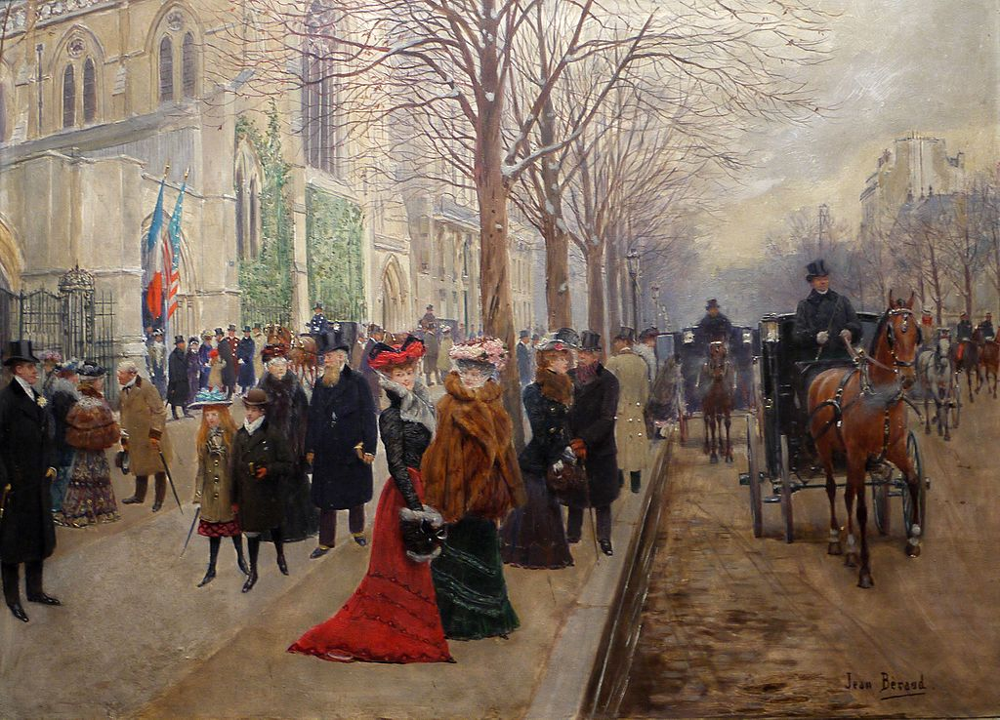

<head>
<meta charset="UTF-8" />
<meta name="keywords" content="drawing, painting" />
<meta name="description" content="drawings by Sunjy" />
<title>Sunjy</title>
<link rel="shortcut icon" type="image/x-icon" href="../../mImages/mCommon/favicon.ico" media="screen" />
<link rel="stylesheet" type="text/css" href="../../mCsses/mCommon/mCssA.css" />
<link rel="stylesheet" type="text/css" href="../../mCsses/mCommon/mCssB.css" />
<link rel="stylesheet" type="text/css" href="../../mCsses/mCommon/mCssC.css" />
<link rel="stylesheet" type="text/css" href="../../mCsses/mCommon/mCssD.css" />
<link rel="stylesheet" type="text/css" href="../../mCsses/mContent/mCssA.css" />
<link rel="stylesheet" type="text/css" href="../../mCsses/mContent/mCssB.css" />
<link rel="stylesheet" type="text/css" href="../../mCsses/mContent/mCssC.css" />
<link rel="stylesheet" type="text/css" href="../../mCsses/mContent/mCssD.css" />
</head>
<script type="text/javascript" src="../../mScripts/mContent/mContentAA.js" /></script>
<script type="text/javascript" src="../../mScripts/mContent/mContentAB.js" /></script>
<script type="text/javascript" src="../../mScripts/mContent/mContentAC.js" /></script>
<script type="text/javascript" src="../../mScripts/mContent/mContentAD.js" /></script>
<script type="text/javascript"></script> 
<script type="text/javascript">
document.write('<div class="mImgAbsolute"></div>');
/*
document.write('<p class="mFontSizeBColor" />From a white paper...</p>');
document.write('<table class="center"><tr><td>');
document.write('');
document.write('</td></tr></table>');
*/
</script>


<script type="text/javascript">
document.write('<p class="mFontSizeBColor" />After the Service at Holy Trinity Church, Christmas 1890</p>');
document.write('<p class="mFontSizeSColor" />“After the Service at Holy Trinity Church, Christmas 1890” by Jean Béraud depicts wealthy Americans and English families exiting the American Cathedral in Paris, formally known as the Cathedral Church of the Holy Trinity. <br><br>Béraud’s skills are evident in this precisely detailed painting of a cold winter’s Christmas streetscape capturing the fashion and transportation of Paris in the 1890s.<br><br>The two women in the center of the canvas are the most detailed in their furs, floral hats with their elegant faces and hair protected by transparent veils.<br><br>The church with the flags of the US and French flags in front was completed in 1886 in the Gothic Revival style and catered to expatriates, students, tourists, and business travelers preferring English-speaking Episcopal services.<br><br>American Cathedral in Paris<br><br>The American Cathedral in Paris is one of the oldest English-speaking churches in Paris. It is part of the worldwide Anglican Communion and located in central Paris between the Champs-Elysées and the River Seine.<br><br>The origins of the American Cathedral of the Holy Trinity, date to the 1830s when American Episcopalians began to meet together for services in the home of American expatriates.<br><br>In the 1870s, a fund-raising effort was successful in raising the money needed, the site that was purchased, and construction was completed in less than four years.<br><br>The church had its inaugural services in 1886, which coincided with the dedication of the Statue of Liberty in New York.<br><br>Holy Trinity became a cathedral in 1922, continuing as a parish church and serving as the official seat of the bishop in charge of Episcopal churches in Europe.<br></p>');
document.write('<table class="center" /><tr><td>');
document.write('<br>Béraud’s skills are evident in this precisely detailed painting of a cold winter’s Christmas streetscape capturing the fashion and transportation of Paris in the 1890s.<br><br>The two women in the center of the canvas are the most detailed in their furs, floral hats with their elegant faces and hair protected by transparent veils.<br><br>The church with the flags of the US and French flags in front was completed in 1886 in the Gothic Revival style and catered to expatriates, students, tourists, and business travelers preferring English-speaking Episcopal services.<br><br>American Cathedral in Paris<br><br>The American Cathedral in Paris is one of the oldest English-speaking churches in Paris. It is part of the worldwide Anglican Communion and located in central Paris between the Champs-Elysées and the River Seine.<br><br>The origins of the American Cathedral of the Holy Trinity, date to the 1830s when American Episcopalians began to meet together for services in the home of American expatriates.<br><br>In the 1870s, a fund-raising effort was successful in raising the money needed, the site that was purchased, and construction was completed in less than four years.<br><br>The church had its inaugural services in 1886, which coincided with the dedication of the Statue of Liberty in New York.<br><br>Holy Trinity became a cathedral in 1922, continuing as a parish church and serving as the official seat of the bishop in charge of Episcopal churches in Europe.<br>" />');
document.write('</td></tr></table>');
</script>


